Part 1 of 4
The market
Why demand is building, and why the usual answers leave jobs on the table.
Certified Contractor briefing · For new entrepreneurs and exterior contractors
Homes are older than ever, insurers are squeezing aging roofs, replacements run $14K–$25K+, material prices keep climbing and crews are scarce. Millions of aging-but-sound roofs need an answer that isn't a tear-off, and almost nobody is selling it yet.
Sources below.
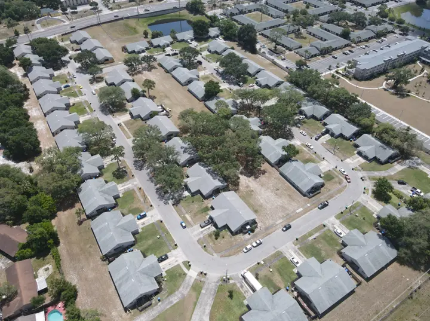
They brought my 16-year-old roofs back to life.
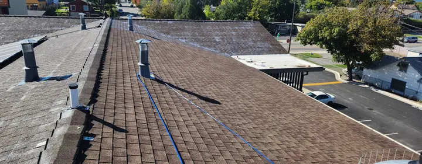
We saved a lot of money preserving our roofs this year.
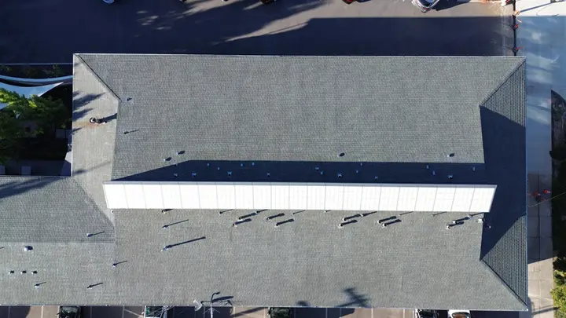
They revitalized it beautifully!
Verified jobs, on record. See the case studies
The market at a glance
Every shingle roof ages on the same clock. The opportunity is the years between "new" and "replace," and very few contractors sell anything for them.
Who this is for
Whether you're starting from zero or adding to a business you've already built, you get the same training, the same certification and the same proof on every job.
For entrepreneurs ready to run a crew and do the work.
For roofing, solar, exterior-cleaning, gutter, painting and spray-foam companies, and any trade already working on the outside of the house.
Start in a category with few established players, a small crew, no tear-off and training from day one.
→ Launch your own companySell to the aging roofs you walk away from today, and stay the roofer of record until replacement time.
→ Work between replacementsTurn the tune-up into the first step of a preservation job, with check-ups that bring you back.
→ More to offer, scheduled check-upsYou're already on the roof with the wash done. Preservation is the next step of the same visit.
→ Protect what you just cleanedAssess and preserve the roof before the array goes on, with a record behind it.
→ Unstick stalled installsYou already run a sprayer and sell protection for a surface. This is the same skill on the roof, under a written protocol.
→ Your rig, a new surfaceSpray equipment, attic access and the ventilation conversation are already your trade. Now sell the roof above it.
→ From the attic to the roofHandyman, maintenance and in-house crews who look after many roofs for owners, managers and HOAs.
→ One client, many roofsPainters, remodelers and exterior pros who already have customers and want a need-driven second line.
→ Add a category, not a franchiseAlso a fit: siding, window and gutter-guard installers, pressure washers, home-improvement companies and any crew with sprayer or roof experience. If your trade already puts you on or around the roof, the skills carry over.
Part 1 of 4
Why demand is building, and why the usual answers leave jobs on the table.
01Why it's quietly booming
None of them make the news on their own. Stack them together and you get millions of aging-but-sound roofs whose owners need a documented answer, and very few contractors selling one.
The median owner-occupied home was 31 years old in 2005. It was 42 in 2024, and about 47% were built before 1980. Older homes mean more roofs in the aging-but-sound window, year after year.
→ More roofs aging than failingCarriers in many states now switch older roofs to actual cash value, require inspections, or decline to renew. Homeowners suddenly need proof of condition, and the roofer's only answer is "replace it."
→ Owners want a documented roof, not just a new oneThe average shingle job now runs about $14,500, and bigger or steeper roofs go well past $25,000. Labor is 40–60% of the bill. When the price is five figures and the roof still has years in it, owners delay, and the roof keeps aging with nobody working on it.
→ A large, waiting marketShingles are made from petroleum asphalt, and their price follows oil. In early 2026, roofing material costs rose at the fastest pace in more than two years.10 Every increase makes the next replacement harder to say yes to, and protecting the roof you already have easier to choose.
→ Preservation gets more attractive every yearTear-off is labor-hungry, and the trade can't hire fast enough. Work that needs a small crew and no tear-off is work you can actually staff.
→ Low-labor jobs winSpray-on oil rejuvenators spread fast because owners wanted something short of a new roof. The demand is proven. The product is the weak link.
→ The category is real; the material is the openingThe housing stock keeps getting older
Median age of an owner-occupied home
Share of homes built in the last 14 years
The companies with the biggest voices in roofing make money when roofs are replaced. Nobody with a megaphone benefits from telling homeowners their roof has years left. That's why the demand is building where most contractors aren't looking.
This is need-driven work. Roofs age whether or not the economy is good, and home repair and maintenance spending has held above $500 billion a year.6 You're not competing to sell a luxury. You're answering a problem the homeowner already has.
Market signalOwners are staying longer than ever: the typical seller held their home a record 11 years, and today's buyers expect to stay 15. People who stay put take care of the roof they have.15
02The two incumbents
First, how a shingle actually fails, because every option on the market is a bet on one part of this cycle.
Drag the roof through the years
The cycle underneath: sun → drying and cracking → moisture, algae and moss → granule loss → back to the sun.
Illustration. Every roof ages differently with climate, shingle line and ventilation; the Roof-Life Assessment decides.
Every roof in that green window, in your county, is a job nobody is selling yet. See if your county still has a seat.
So you wait for the roof to fail, then bid against every roofer in the county for the same tear-off. Everyone whose roof is aging but sound never calls you, because there's nothing for them to buy. That's most of the roofs in your market.
Soy-based oils put some of the lost oil back, and that's real. But an oil is a penetrant: it soaks in and leaves nothing on top to block UV, so the sun starts drawing the oils back out from the day it's applied. That's why treatments are commonly marketed at about five years and re-applied on a cycle.7 No top layer also means no film to measure and nothing to show the homeowner.
A coating sits on the granules as a film. When it cracks and lifts, it's your callback, and the homeowner remembers your name for the wrong reason.
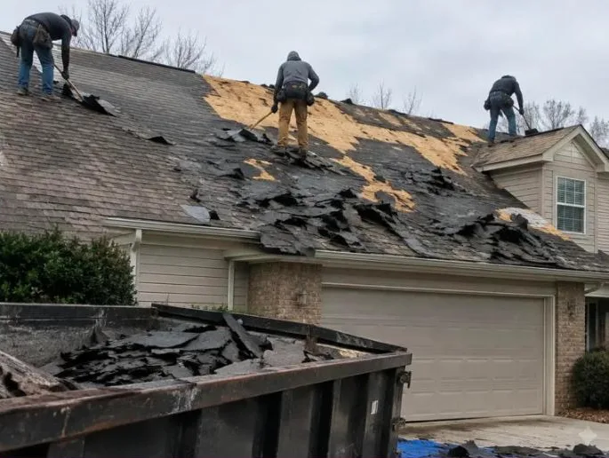
Tear-off: strip to the deck, fill a dumpster, multi-day crew. U.S. tear-offs produce an estimated 10–11 million tons of shingle waste a year.8
The old game and the new game
| The old game | The new game | |
|---|---|---|
| Who you can sell to | Dead roofs, after they fail | Aging roofs with years left |
| What the homeowner hears | "Replace it," or "oil it again in five years" | "Here's what's left, what we did, and the measurement" |
| What's left on the roof | New shingles, or nothing you can measure | A measured film and a coupon you can read for years |
| The warranty | The shingle maker's, or a contractor's word | Calculated from the film, issued by the manufacturer |
| Where you stand | Bidding against every roofer in the county | One of a capped number of certified seats |
Market signalRoof claims cost insurers nearly $31 billion in 2024, and the premium gap between newer and older roofs has tripled since 2022. A documented roof is becoming something owners need, not just want.18
Check if your market is available before a competitor takes the seat
Part 2 of 4
The new mechanism, and the proof that it does what it says.
03Stewardship, not rejuvenation
A rejuvenator asks the homeowner to trust that something happened. Stewardship means you can prove what's on the roof, today and at every check-up after. That takes two things oils don't have.
Oils soak in and leave nothing on the surface. Coatings sit on the surface and nothing goes in. NANOROOF™'s professional-grade silicone does both: it penetrates and bonds inside the asphalt shingle, then encapsulates it, blocking the UV that starts step 1 of shingle failure. Silicone has more than 50 years in polymer science and decades of commercial roof restoration behind it.
Wet-film readings during the spray, a witness coupon on the roof, cured thickness recorded on the homeowner's certificate. The warranty is issued against that measured film, with its term calculated from silicone's known UV wear rate, not from a sales promise. Certification is what lets you register it.
Scheduled check-ups compare the roof to its record. When a roof needs replacing, you say so in writing. That honesty is what makes you the contractor the homeowner calls for everything after.
How a roof is actually preserved: five steps, one of them spraying
Putting a material on shingles is not the job. The job is the process around it, and it's the same on every roof.
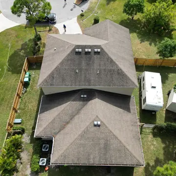
1The Roof-Life Assessment: age, shingle type, decking, flashings, ventilation and how the roof was installed, with photos. Roofs that don't qualify are documented and declined, or sent to repair or replacement.
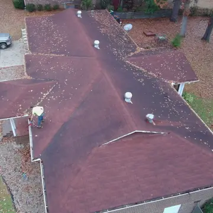
2Reseal flashings and penetrations, replace a few damaged shingles, fix nail pops. Light repairs are done on the spot; bigger repairs go to a licensed roofer.
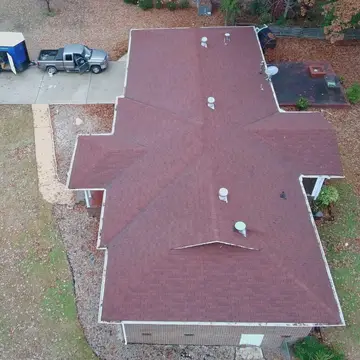
3A low-pressure soft wash takes algae, moss and debris off, so the silicone bonds to the shingle, not the dirt. Never pressure-washed.
Low-pressure spray to the written protocol, with wet-film readings slope by slope and a witness coupon left on the roof.
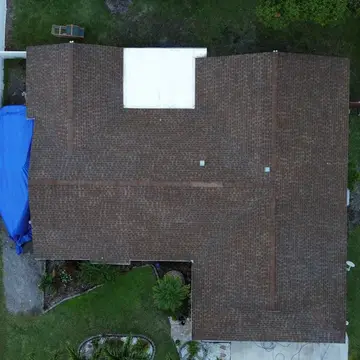
5Cured thickness, before-and-after photos and the Roof Record. The job is registered and the warranty is issued against the measured film.
What happens inside the shingle
Swipe to compare →
Illustration
What every certified contractor commits to, on every roof.
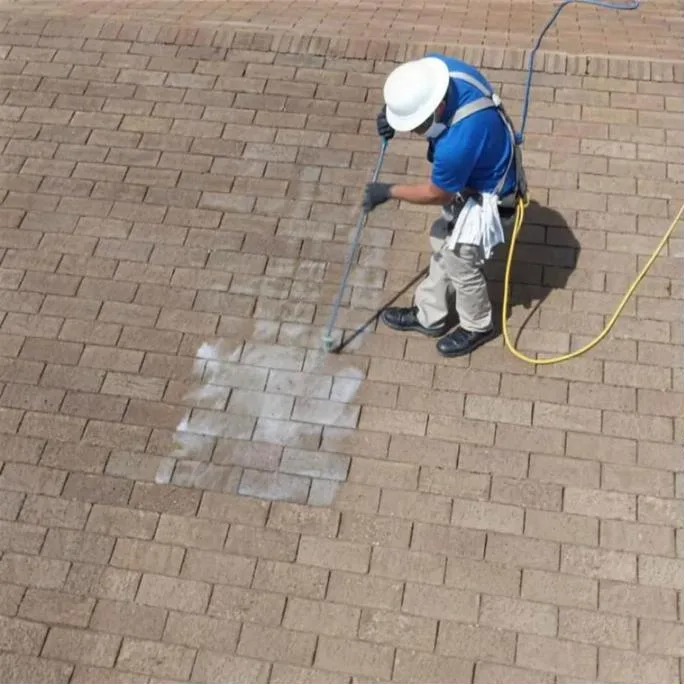
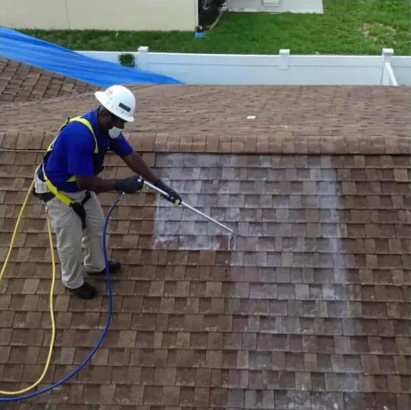
Want this on the roofs in your market?Appointments are capped per county. One call tells you if yours is open.
Check If My Market Is AvailableMarket signalHomeowner spending on improvements and repairs is projected at a record of about $526 billion in early 2026. Preservation is existing-home work: it doesn't wait on new construction.16
04Competitive analysis
Five ways homeowners get pitched today. Only one combines a bonded material, a measured film and a registered warranty.
| Tear-off & replace | Oil rejuvenator | Acrylic / surface coating | Do nothing | NANOROOF™ | |
|---|---|---|---|---|---|
| Sells to aging roofs with years left | ✕ | ✓ | ✓ | — | ✓ |
| No tear-off or landfill waste | ✕ | ✓ | ✓ | ✓ | ✓ |
| Works inside the shingle | — | ✓ | ✕ | ✕ | ✓ |
| Leaves a protective layer on top | — | ✕ | ✓film that can crack and lift | ✕ | ✓encapsulates the shingle |
| Thickness measured and recorded | — | ✕ | ~rarely | ✕ | ✓ |
| Warranty calculated from the measured film | — | ✕ | ✕ | ✕ | ✓ |
| Scheduled check-ups against a record | ✕ | ✕ | ✕ | ✕ | ✓ |
| Recoatable | — | ~re-treat cycle | ~ | — | ✓bonds to itself |
| Blocks UV from day one | — | ✕nothing on top | ✓ | ✕ | ✓ |
| Color options | ✓new shingles | ✕ | ✓ | — | ✓6 system colors |
Swipe the table sideways →
The contractor's dilemma: innovation vs. field history
Only one option measures the film and puts the warranty in writing. Be the Certified Contractor who offers it in your market.
05Manufacturers and insurers
Federal law generally doesn't let a manufacturer void a warranty just because another product was used, though it can deny a claim for damage it shows that product caused.11 Every homeowner signs a plain-language notice before the job, and owners still under a shingle warranty can check with the manufacturer first.
Florida sets many of the standards the rest of the construction industry follows; its roofing code is widely seen as the strictest in the country.14 Its 2022 law bars carriers from refusing a roof on age alone when an inspection shows five or more years of life left.12 The industry's roof-age posture is slowly changing, and being challenged, and condition is what you document.
Every job ends with a Roof Record the owner can show any inspector, agent, buyer or carrier: condition, repairs and the protection measured on the roof. NANOROOF™ isn't an insurance product, and we don't claim any insurance carrier discounts.
Bring documented roofs to your market: check if it's available
The homeowner's warranty
Every registered roof carries the NANOROOF™ Sealer SPS Limited Warranty, issued by NANO Products, LLC, not by the Certified Contractor. It covers water repellency, sun and weather wear, and moss and algae on the treated shingles, labor and material included, for a term set by the film actually measured on the roof. Claims never cost the owner anything, and coverage stays even if the Certified Contractor closes. Claims are paid from a warranty reserve the manufacturer holds.
The 10-year warranty is the standard. 15 and 20 years are options. Silicone wears from the sun at a known rate, so every warranty is calculated from that rate and the film actually measured on the roof, not picked from a brochure. A longer term takes more product on the roof, documented on the certificate.
If the treatment ever stops repelling water, it's re-treated free. If three re-treatments don't fix it, the owner gets their money back for that area: 100% in the first two years, prorated after. If a covered failure forces a new roof, the owner gets back what they paid for the treatment. If their insurer questions the roof, we pay for the inspection report.
The sample certificate, the full Fix-It Promise, claims and exclusions are on your confirmation page, and the full warranty is sent to you in writing before your demo call.
A manufacturer warranty, calculated and registered on every roof you treat. Check if you can offer it in your county.
NANOROOF Certified Contractor is a product certification, not a franchise or business opportunity. Independent contractors buy materials at published prices. There are no certification or territory fees; optional in-person training is extra. We make no income claims, and no leads, appointments or results are promised. Marketing services from our sister company are optional, sold separately, and not offered to contractors in Florida or Texas. Contractors are responsible for their own licensing and insurance.
Part 3 of 4
What the work looks like, the labor, where jobs come from and the platform behind it.
06The work
Every certified contractor follows the same written NANOROOF™ Protocol, and every step leaves something on the record.
Roof-Life Assessment: 25-point inspection scored out of 250, ULEA Levels 1–7. On the record: photos and a written assessment.
Exposed nails, loose shingles, flashings and penetrations repaired. On the record: what was repaired, and where.
Algae, moss and grime off at low pressure, granules left on. On the record: surface condition before application.
Moisture readings and witness coupons placed before spraying. On the record: readings and coupon placement.
Low-pressure spray to the Protocol, never in cold weather. On the record: metered material applied.
Cured thickness recorded, certificate handed over, warranty registered. On the record: thickness, photos, registration.
Every slope, before and after.
Baseline moisture before spraying, film as it goes on.
Metered gallons applied.
Scheduled check-ups put you back on the roof, and back on the street, on a calendar. Offer the tune-up, wash or color the roof needs, then work the neighborhood while you're there: a yard sign, door hangers and free assessments for the neighbors, whose roofs are usually the same age.
One roof, four services
Color restoration comes in six system colors, applied with the same silicone system and covered by the same warranty. Faded or mismatched roofs become a fourth service on the same visit, and a reason for the neighbors to ask who did it.
Each system color is one uniform color across the whole roof, not a blended or dimensional shingle look. Shown as an illustration; physical chips are on your demo call.
See the work
Same roofs, same angle: cleaned and treated. This is what the neighbors see the day after you leave.
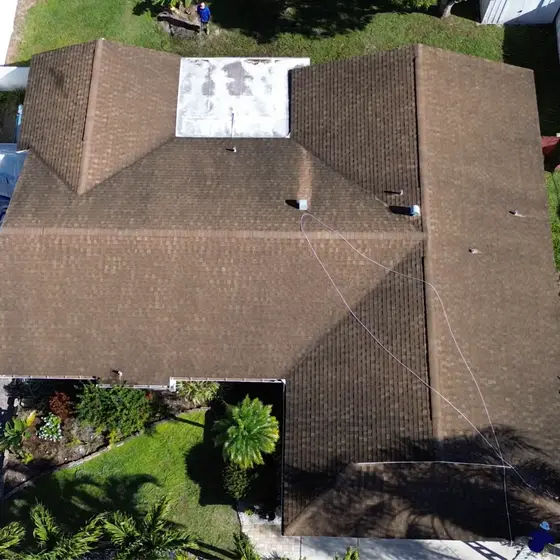
Before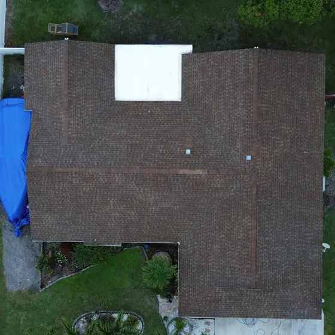
AfterSingle-family hip roof
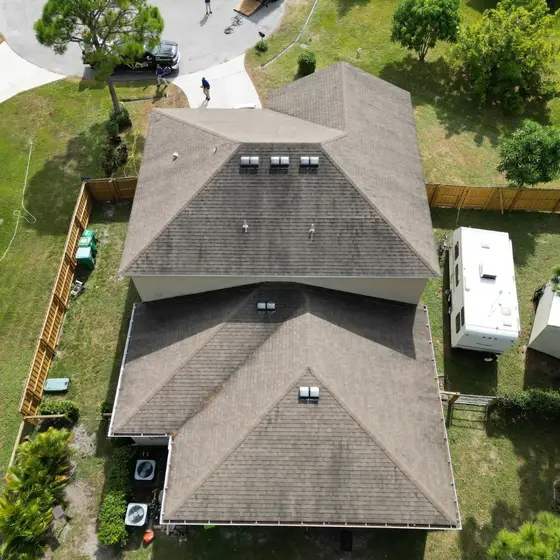
Before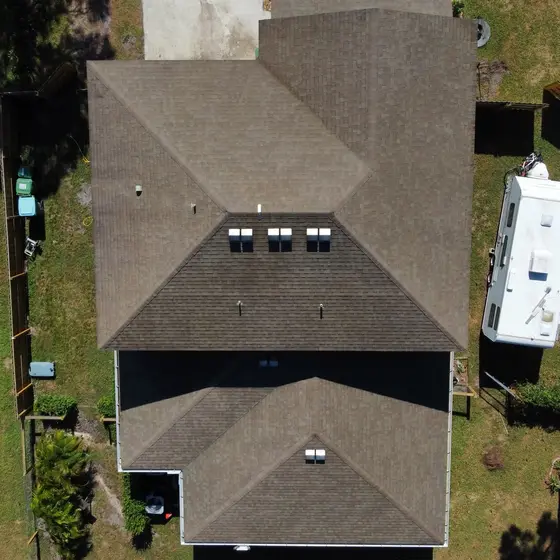
AfterTwo-story with dormers
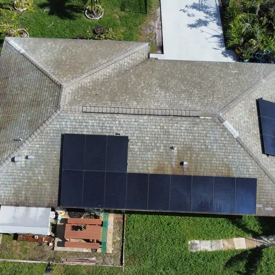
Before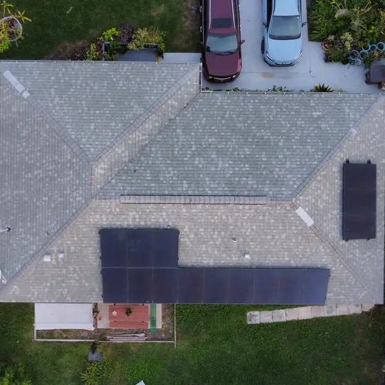
AfterRoof with a solar array
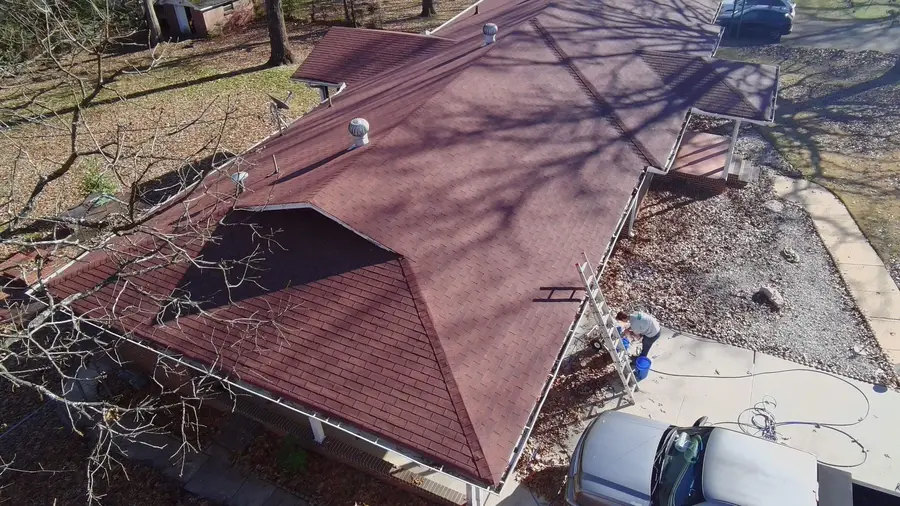
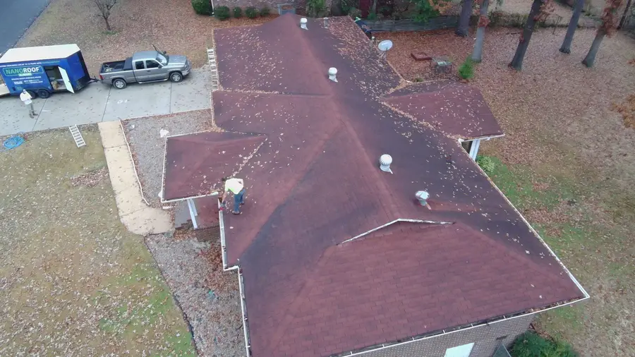
Every finished roof sells the next one on the street. Find out if your market is open.
07Minimum labor, maximum proof
Whether you've run tear-off crews or never stood on a roof, compare what each job takes. No tear-off, no dumpster, no new shingles. Preservation is a small crew with standard tools, finished in two days at most. Slide to a roof size.
Replacement vs. preservation, same roof
Replacement figures from published industry ranges (sources 3, 9, 10). Preservation figures are typical NANOROOF™ job planning ranges; actual time varies with roof condition and repairs.
Same roof, two very different jobs
Enter a roof size in square feet. A typical single-family roof is 1,700–3,000 sq ft.
Replacement figures are national averages from published 2026 cost data (sources 3, 18) and vary by region, pitch and shingle line. Each independent Certified Contractor sets their own prices for their market. The price field only multiplies the number you enter; it is not a quote, a projection or a promise of sales or income, and we make no earnings claims.
A small crew, no tear-off, two days at most. See if a seat is open where you work.
08Your brand, your marketing
You operate and market under your own company name, your own way. Certified Contractors may use co-branded materials at no cost if they choose.
Our sister company, from the same team behind NANOROOF, offers marketing services made specifically for roof preservation contractors. It knows the product, the property owner and the category. Use it, use your own agency, or run your marketing yourself. It’s sold separately, and nothing about your pricing, certification or warranty depends on it. Explore it after you join. Not offered to contractors in Florida or Texas.
Our sister company is under common ownership with NANOROOF. Its services are optional and sold separately. No leads, appointments, sales or results are promised.
The full lead playbook, channel by channel, comes with your onboarding.
Referral partners and the job-site halo are where most new Certified Contractors start, because they cost time, not ad spend. Your first two to three jobs are reviewed and audited against the Protocol, so the record you show partners is solid from day one.
Property managers, multifamily owners, HOAs and real estate investors look after dozens of shingle roofs on a budget. A measured record across every roof lets them plan capital spending instead of reacting to failures, and one relationship can mean many roofs.
Not every roof that comes through a preservation funnel qualifies. In our experience, about 1 in 5 assessed roofs needs repairs or a replacement instead. Light repairs are work you can do on the spot. Bigger repairs and replacements may need a licensed roofer: if you're a roofer, they're yours; if you're not, they're the reason to have a roofer as a referral partner, or a license on your team. You send them the replacements, and they send you the aging roofs.
Portfolios, on record
"They brought my 16-year-old roofs back to life."Real estate investor, Orlando
"We saved a lot of money preserving our roofs this year."CG Apartments staff
"They revitalized it beautifully! I'm thrilled with the results."Modern Hotel and Bar
Market signal65% of homeowners who renovated last year did it instead of moving. Owners are investing in the homes they already have.17
Every market has the same partners. Each one sees an aging roof before you do.
First to write "roof near end of life."
Old roofs stall closings and insurance quotes.
Their clients get the roof-age letters.
Need a sound roof before the array goes on.
The roofs too early to replace.
On aging roofs every week.
See the faded roof on every bid.
Many roofs, one budget.
Aging rentals and a capital plan to keep.
See the decking and ventilation from below.
The roof question comes up on exterior jobs.
Not every aging roof needs a claim or a tear-off.
09The platform behind the proof
Job documentation, inspection tools and warranty registration. No subscription required.
Optional paid SubstrateIQ features are available separately and are never required for certification, pricing or warranty eligibility.
Every NANOROOF Certified Contractor gets SubstrateIQ for job documentation and warranty registration. How you run the rest of your business is up to you. Optional paid features are never required.
Part 4 of 4
What it takes to start, what you get, your territory, and what happens next.
How the program was built
We didn't design the program in a boardroom. We watched where Certified Contractors won, where they got stuck and where warranty files fell apart, then built the fix into the system. Every piece below exists because a Certified Contractor needed it.
What we sawHomeowners trusted the Certified Contractors who showed numbers.
What we builtEvery roof is measured, and the warranty is calculated from the film on it.
What we sawEarly jobs are where mistakes happen.
What we builtYour first two to three jobs are reviewed and audited before you run solo.
What we sawWarranty files failed on missing photos.
What we builtOne required photo set: four slopes plus a drone shot, before wash, after wash and after spray.
What we sawThe first sales conversation was the hardest part.
What we builtThe free Roof-Life Assessment leads, and the Academy's sales manual walks you through it.
The full list is on your confirmation page after you book.
Much of the roof-treatment space is filling up with low-skill applicators and cheaper materials, and the callback is the business model: spray it, come back in a few years, spray it again. The industry hasn't adjusted to why roofs actually fail, and nothing gets measured, so nothing gets proven. That's why inspectors, agents and insurers have learned to treat "roof treatment" as a guess.
Certification (online training, a test and your first two to three jobs audited) is what gives you the right to register a NANOROOF™ warranty. It's separate from the optional Academy, and nobody sprays under the warranty without it.
Use all of the optional pieces, some of them or none of them. Certification and the protocol are the only parts that aren't optional, because they're what make the warranty real. The Academy is business support: it helps you sell and run the company, and it doesn't certify you.
You're not on your ownTraining, a written protocol and audits on your first jobs come with certification. The Academy, optional sister-company marketing, SubstrateIQ and hands-on training are there if you want them. Build the business you want, with as much support as you choose.
The system is built. Certification is the only required part. Start with a 2-minute market check.
From the network
Individual Certified Contractors describing their own businesses. Every Certified Contractor's market, crew and results are different, and this isn't a prediction of yours.
10What it takes to start
Tick what you already have. The startup order covers the parts most people don't.
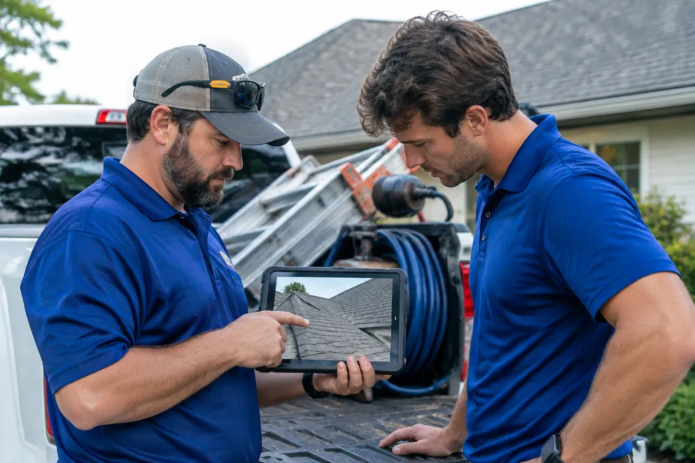
Agreement, protocol and warranty documents to review.
You and your applicators train and test online; hands-on instruction is an optional paid add-on. Your tote ships.
Your first two to three jobs are documented, reviewed and audited virtually against the Protocol.
Reviewed jobs confirmed. You run jobs on your own.
Register every roof against its measured thickness.
11What you get
One investment. No franchise fee, no territory fee, no royalty. It's product you put on roofs, plus the certification to warranty it.
Enough for your first run of roofs. The coverage math is on the demo call.
A case of each, for the tune-up repairs every roof needs.
Online training and test, the Applicator Manual, and virtual review and audit of your first two to three documented jobs, so you can register roofs. Hands-on instruction is an optional paid add-on.
Playbook, sales and customer-service manuals, marketing pack and CRM. Included in your investment and optional to use; Certified Contractors can operate without it. The Academy is not the certification. Certification is separate and mandatory to carry the warranty.
Included on your opening order. Paid by the Certified Contractor on reorders.
Not in the opening order: equipment and marketing, which are optional and priced separately. Financing is available if you qualify, including equipment financing, through third-party lenders. See financing
Earn the badge. Certification is earned system by system. Each badge tells homeowners and property owners exactly what you're trained and certified to apply. Every sprayer on a job is certified.
Third-party financing is available on both sides of the business for those who qualify, subject to credit approval. It helps you start, helps you equip, and helps your customers say yes.
If you qualify, you can finance the $25K–$30K+ Certified Contractor startup investment instead of paying it all up front.
Equipment isn't in the opening order. Buy it anywhere, and we'll show you where to get every piece, with equipment financing for Certified Contractors who qualify.
Offer your customers third-party financing on their jobs, so a preservation job fits the budget, and a multi-roof owner can treat a whole portfolio on a schedule.
Financing is provided by independent third-party lenders. Approval, rates and terms are set by the lender and depend on the applicant. We'll go over current options on your demo call.
Issued against the measured film, not by you. It stays in force if you leave the network.
Your first two to three jobs are reviewed and audited virtually against the Protocol before you run solo.
Your name, your pricing, your customers, with optional co-branded materials for certified contractors. Your marketing stays yours. Sister-company marketing services, optional SubstrateIQ paid features and the Academy are optional — marketing services are not offered in Florida or Texas.
What's in front of you
Applications are first come, first served. A full market only reopens if a seat goes vacant.
Certified Contractors appointed inside a county. When the seats are filled, we stop appointing there.
One per 500,000. Earned on volume, never sold.
Pick your county to see its population and how many seats it has.
Population from the U.S. Census Bureau (American Community Survey). Seat counts are an estimate from population; the market check confirms whether a seat is still open.
A 15-minute fit call first. If it's a fit, a 30–45 minute demo call on the opening order, certification and warranty. If it isn't a fit, we say so.
Where this is going
Categories reward the people who show up first, with the best tool and the proof to back it. Here's how we're getting ready to own roof preservation, and where you fit.
A silicone that bonds inside the shingle and encapsulates it. The part oils can't do, and the reason the clock slows down.
Every roof measured and recorded. Over time, a data set on how roofs age that nobody else in this space is building.
Seats capped per county, so Certified Contractors build markets instead of undercutting each other. Master Contractors earn exclusivity and first rights on every new line.
NANOROOF™ is part of Permanence. Over the next 5 to 10 years, preservation across the whole building envelope, from the roof to the foundation.
The contractors holding the seats when homeowners and insurers catch on will be the names everyone else measures against.
Market signalOnly about 13% of owner-occupied homes were built in the last 14 years, down from 18% a decade ago. Nearly every roof in your market is aging into this work.19
12Why listen to us, and the honest limits
The people behind the material. Our team brings more than 40 years of combined experience in high-performance coatings, composites and polymeric systems. We've formulated this silicone and developed the way it's applied, measured and documented.
No promised leads. We don't quote margins. Some tests are still in progress, and we won't claim what we haven't measured. It isn't right for every roof: some need replacing, and you'll say so.
On your demo call we show you, step by step, how onboarding works, the equipment, certification and the written warranty terms. Take your time with it. A good fit holds up to questions.
Why we exist
Too much of the built world is replaced before it needs to be, and too much property damage starts with maintenance nobody did. Our mission is permanence: keep buildings in service longer by preserving them, and prove it with a record. NANOROOF™ is one of our Certified Contractor networks, each built around a new way to preserve a different part of the building. Over the next 5 to 10 years we're working across the whole building envelope, from the roof to the foundation and the soil around it.
Questions contractors ask
It sells to the roofs you weren't getting: aging, years left, owner not ready. End-of-life roofs still get replaced, and the assessment says so in writing. The homeowners you preserve for are the ones who call you when it's time.
Yes, if you'll run a crew and do the work. Certification is online and covers the Protocol, measurement and documentation, and your first two to three jobs are reviewed and audited virtually before you run solo. Hands-on instruction is an optional paid add-on. Every sprayer on a job is certified. You'll need licensing and insurance as your state requires.
Yes, in the form of training and tools, not promises. Certification covers the protocol, the Certified Contractor Academy includes a sales manual and the assessment conversation, and your first two to three jobs are reviewed and audited with you. The written Roof-Life Assessment does much of the explaining: you show the owner what you found and what you recommend, including when the roof needs replacing instead. We don't promise leads, sales or income.
No. We don’t sell or promise leads, appointments or sales results. You run your own marketing, in-house or with any agency you choose. Best practices for filling the calendar come with onboarding.
No to both. You run your own marketing, in-house or with any agency you choose. Our sister company offers optional marketing services for roof preservation contractors that you can explore after you join. They are not offered in Florida or Texas. Using them never affects your pricing, certification or warranty.
Yes. Financing is available toward the startup investment for contractors who qualify, and for your customers' jobs, through third-party lenders and subject to credit approval. Terms vary by lender and applicant; we'll go over the options on your demo call.
A low-pressure spray rig, a soft-wash setup, fall protection and readings gauges. We don't sell equipment: buy it from any supplier, or use your own if it meets spec. We'll show you where to get every piece, and equipment financing is available if you qualify.
Preservation isn't a leak repair. Damage, flashings and penetrations are handled in the tune-up first, and roofs that don't qualify are documented and declined. Registered roofs carry the NANOROOF™ Limited Warranty on its written terms: it covers the treatment, water repellency, sun and weather wear, moss and algae, and shingles damaged by a covered failure, but it isn't a leak warranty.
Yes. NANOROOF™ goes on between 40°F and 100°F, so in the South you can spray most of the year. In colder markets, winter is when you certify online, build referral partners and book assessments, so you start spraying on the first warm week with a full calendar.
Federal law generally doesn't let a manufacturer void a warranty just because another product was used, though it can deny claims for damage it shows that product caused. Some manufacturers advise against coatings on installed shingles, so every homeowner signs a plain-language notice first, and owners still under warranty can check with their manufacturer.
We don't claim any insurance carrier discounts. If an insurer questions a registered roof, we pay for an inspection report signed by a state-licensed inspector. What the homeowner gets is a documented roof: condition, repairs and measured protection on record. As insurers move toward judging roofs by condition rather than age, that record is what the homeowner can show.
No. Soft decking, widespread damage and roofs at the end of their life get replaced. The Roof-Life Assessment decides, and you put the answer in writing.
We don't make income claims. Running a business takes knowledge, skill and perseverance, and results vary with your background, your drive and your market, as well as your crew, your sales and correct application. Run the material math on your own jobs and set your own prices.
No. You run your own company under your own brand, with optional co-branded materials for certified contractors. There's no franchise fee, territory fee or royalty.
Still have questions? That's what the 15-minute fit call is for. Start with the market check.
What happens next
Run the math on a roof in your market. If it works, call.